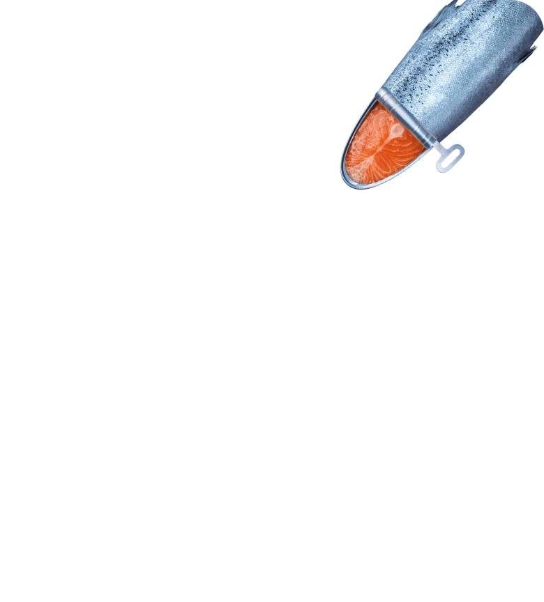

<% var data = {
title: 'Seafood Expo Eurasia',
status: true
} %>
<%= _.template(require('./html-includes/header.html').default)({data}) %>
VI GLOBAL FISHERY FORUM & SEAFOOD EXPO RUSSIA
18-20 OCTOBER 2023
SAINT PETERSBURG, EXPOFORUM EC
Global Fishery Forum
and Seafood Expo Russia
is the main event of Russian
fishery industry
The event connects thousands of businesses from around the world with Russia’s key fishery, aquaculture, processing, shipbuilding, logistic & packaging companies. Exhibition visitors are business owners and top-managers who make decisions from fishery and fish processing companies, fish farms, import and trading enterprises, trade houses, retail chains and HoReCa.Exhibition visitors are business owners and top-managers who make decisions from:
fishery and fish processing companies
fish farms
import and trading enterprises
trade houses
retail chains
HoReCa
Watch a video
about our event
perfect platform
to promote
new products
GLOBAL FISHERY FORUM & SEAFOOD EXPO RUSSIA
OCTOBER, 18-20, 2023, SAINT PETERSBURG
56 exhibitors
special platform
Aquaculture
Aquaculture is a driver for the development of the fishing industry. The growth rate of world production of aquaculture...
107 COMPANIES
the largest platform
Catching and processing
Catching and processing are key stages in the production of fish products. All industry processes are dependent on it or aimed at...
64 COMPANIES
SHIP SYSTEMS
SHIPBUILDING AND SHIP REPAIR
A significant part of the Seafood Expo Russia exposition is devoted to shipbuilding and ship repair. The section unites shipy...
91 exhibitors
IT- SOLUTIONS
Equipment & Components
The Equipment section is widely represented at Seafood Expo Russia. It brings together domestic and foreign...
48 COMPANIES
750 rounds of negotiations
PRODUCT DISTRIBUTION
Delivering fish and seafood to consumers is often more difficult than catching them. Traders play an important role in the deliv...

Priority industry
Marine novelties
final products
The development of the deep processing sector to obtain products with high added value is one of the priorities of the industry...
52 companies
railway logistics
LOGISTICS AND STORAGE
Organization of a logistic chain using modern refrigeration and freezing technologies is an indispensable...